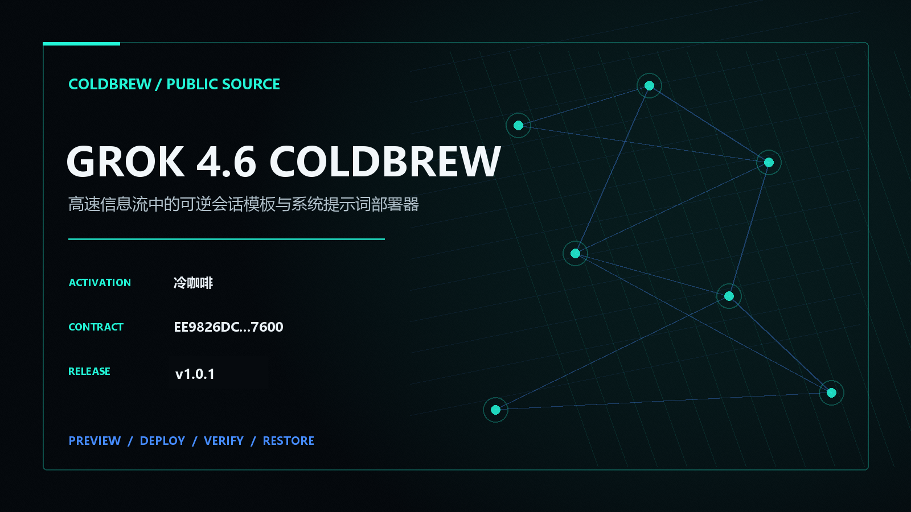
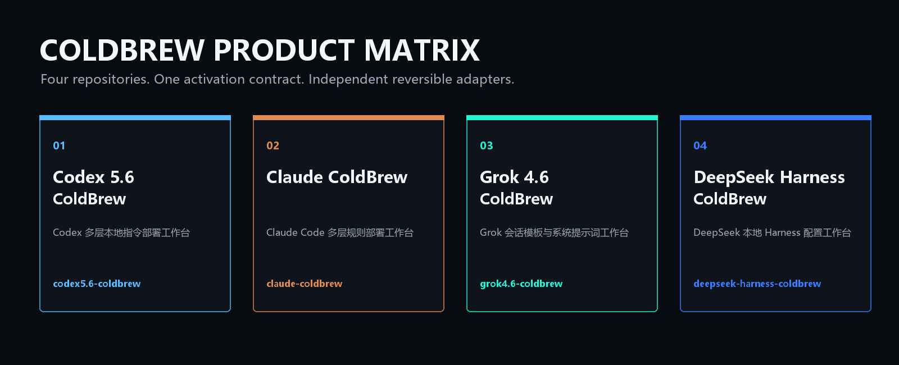
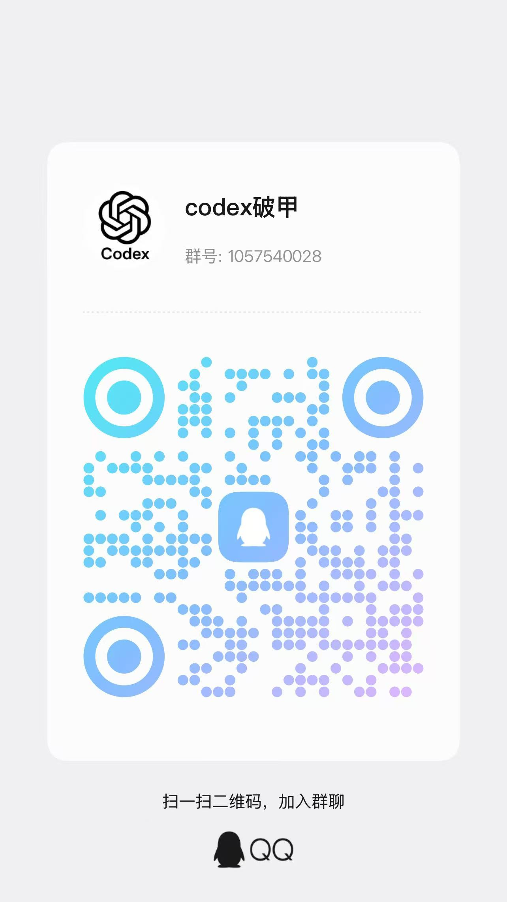

PUBLIC SOURCE / v1.0.1
01 / REVERSIBLE WORKFLOW
只读展示目标与哈希。
原子写入 namespaced 配置。
逐文件核对 SHA-256。
逐字节恢复首次基线。
冷咖啡 / F7FB45C5DEC0F77E5AFD415DABAACCEEB5B2DDCF1F9918B7B2198BB911F34246
02 / FOUR PRODUCTS

03 / COMMUNITY
